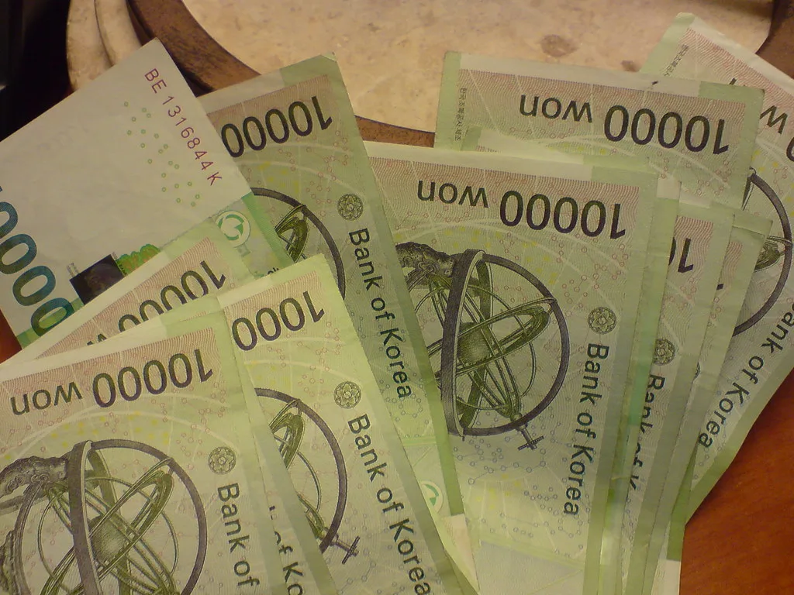
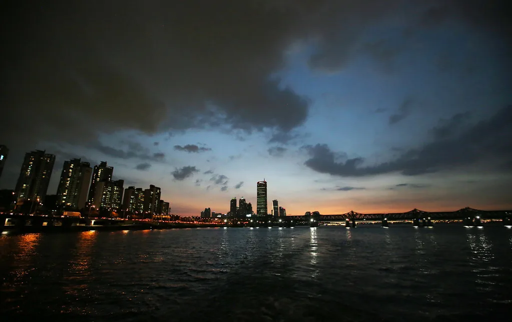

신임 경제부총리 후보자 이형일…'거시경제통'이 떠안은 물가·부동산·통상 과제
이재명 대통령이 30일 경제부총리 겸 재정경제부 장관 후보자에 이형일 현 재정경제부 1차관을 지명했다. 이번 6개 부처 개각의 핵심으로 꼽히는 인사로, 취임 1년여 만에 물러나는 구윤철 부총리의 뒤를 이어 집권 2년 차 경제팀을 이끌게 된다. 강훈식 대통령 비서실장은 이날 브리핑에서 거시경제 전반에 밝은 정책 전문가이자 부처 안팎의 신망이 두터운 인물이라는 점을 발탁 이유로 들었다. 재정경제부 1차관이 곧바로 부총리 후보자로 승진한 것은 이례적이다.
이 후보자는 1971년 대구에서 태어나 서울대 경제학과를 졸업하고 행정고시 36회로 공직에 들어왔다. 미국 텍사스A&M대에서 경제학 박사 학위를 받았고, 재정경제부에서 경제분석과장, 종합정책과장, 경제정책국장, 차관보 등 거시정책을 총괄하는 자리를 두루 거쳤다. 문재인 정부 청와대에서 경제정책비서관을 지냈고, 이후 통계청장을 맡아 유엔 통계위원회 부의장 등으로 활동하며 국제무대 경험도 쌓았다.

관가에서는 그를 대표적인 '거시경제통'으로 평가한다. 2015년부터 3년간 세계은행 선임 이코노미스트로 일했고, 외환위기 직후에는 금융시장 안정 업무를 담당했다. 재정경제부 직원들이 직접 투표로 뽑는 '닮고 싶은 상사'에 세 차례 선정될 만큼 조직 내 신망이 두텁다는 점도 자주 거론된다. 현 정부 출범 이후에는 1차관으로서 일자리와 물가, 성장률 등 핵심 지표 관리를 맡아 왔다.
경제팀 교체의 직접적 계기로는 구 부총리가 최근 주요 20개국(G20) 재무장관·중앙은행 총재 회의 참석을 위해 인천공항까지 갔다가 출국 직전 일정을 취소한 일이 꼽힌다. 여기에 국정 지지도 하락이 이어지면서 쇄신 요구가 커졌고, 대통령은 거시정책을 맡는 재정경제부와 부동산 정책 주무 부처인 국토교통부를 함께 교체하는 카드를 꺼냈다. 경제와 부동산 라인을 한꺼번에 손봐 정책 추진력을 끌어올리겠다는 의도로 풀이된다. 국토교통부 장관 후보자로는 홍지선 현 차관이 지명됐다.
새 경제팀 앞에 놓인 과제는 무겁다. 우선 추석을 앞두고 성수품 가격을 안정시키는 일이 급하다. 여름철 폭염으로 농산물 수급이 불안한 데다, 장바구니 물가에 대한 체감이 여전히 높다. 가계부채와 부동산 시장 관리도 이어가야 한다. 정부는 대출 총량 관리 기조를 유지하면서 실수요자 불편을 줄이는 방향으로 정책을 조율하고 있다.

통상 현안도 시급하다. 대미 투자와 관세를 둘러싼 협상을 매듭짓고, 반도체에 쏠린 수출 구조의 취약성을 보완하면서 내수 회복 흐름을 이어가야 한다. 이 후보자가 밑그림을 그린 것으로 알려진 정부의 중장기 성장전략 '3·4·5 경제 대도약' 구상을 실제 성과로 연결하는 일도 그의 몫이다. 무엇보다 청년 취업난 해소가 국정의 최우선 과제로 꼽히는데, 좋은 일자리가 늘지 않으면 내수와 소비 회복도 더디다는 점에서 재정·산업·고용 정책을 아우르는 조율 능력이 시험대에 오른다.
부총리는 국회 인사청문 대상이어서 이 후보자는 청문회를 거쳐야 정식 임명된다. 야당은 정책 역량과 도덕성을 함께 검증하겠다고 예고했고, 인사청문 정국은 다른 후보자들과 맞물려 순탄치 않을 전망이다. 새 경제팀은 청문 절차와 별개로 다음 달 국회에서 내년도 예산안과 부동산 세제개편안 심사를 챙겨야 한다. 세제개편안은 야당 반대가 거세 통과를 장담하기 어렵다. 시장은 지도부가 바뀌더라도 정책의 큰 방향과 부처 간 손발이 흔들리지 않을지에 주목하고 있다.